Ölüm Dairesi WikiDepartment of Death · resmî oyuncu rehberi
Bölgeler, ruhlar, patronlar, kule katları, eşyalar ve başarımlar. Hikâyenin sürprizleri kırmızı spoiler kutularında gizli.
01 · MADDEOyun hakkında
Ölüm Dairesi (İngilizce adı Department of Death), SE Logic'in geliştirdiği kara mizahlı, aktif bir incremental oyun. Emekli olup ortadan kaybolan Azrail'in yerine alınan stajyer olarak ruhları biçer, ofis kulesinde mühürler, aylık kotayı tutturur ve rütbe rütbe yükselirsiniz.
Oyun iki ekran arasında geçer. Dünya'da kum saati dolan kişileri biçip kaçan ruhlarını ağla yakalarsınız. Boşlukta süzülen ofis kulesi'nde ise o ruhların öbür tarafa geçiş belgelerini zamanlamalı bir dokunuşla mühürlersiniz. Ay süresi iki ekranda da akar ve ay sonunda yalnızca mühürlenmiş ruhlar kotaya sayılır. Bu yüzden oyun boyunca kendinize hep aynı soruyu sorarsınız: biraz daha mı biçsem, yoksa ofise dönüp mühürlesem mi?
Oyun açıkken oynanır. Uygulama kapalıyken ilerleme ya da çevrimdışı kazanç yoktur. Oyun bir sonu olan hikâyeye sahiptir; finalden sonra sınırsız bir mod açılır.
Bu sayfa oyunun geliştirme sürümüne göre yazıldı ve 27 Kasım 2026'da (Yeni Düzen güncellemesiyle) güncellendi. Sayılar ve isimler çıkışa kadar değişebilir. Bu güncellemeyle gelenler YENİ etiketi taşıyor. Hikâyenin sürprizleri kırmızı spoiler kutularında gizli; açmadıkça görünmez.
02 · MADDEHikâye
Ölüm Dairesi, ölüleri öbür tarafa geçiren kadim bir devlet dairesidir. Binlerce yıldır kâğıt üstünde işler: her ölümün bir dosyası, her ruhun mühürlü bir formu vardır ve mühürsüz ruh öbür tarafa geçemez.
Dairenin tek saha görevlisi Azrail, 4000 yıl boyunca her ölümü kendisi yaptı. Bir gün masasına "Tükenmişlik İzni — Süresiz" yazan bir form bırakıp ortadan kayboldu. Ölümler gecikmeye, ruhlar ortada kalmaya, köylerde "ölemeyen" huysuz insanlar çoğalmaya başladı. Daire panikle staj ilanı verdi.
Siz, öbür tarafa geçiş formunu eksiksiz dolduran tek ruhsunuz. Bu yüzden işe alındınız. Dosya numaranız 2.847.113; patronunuz size kısaca "Yüzonüç" diyor.
Açılış videosu: Azrail'in boş kalan masası.
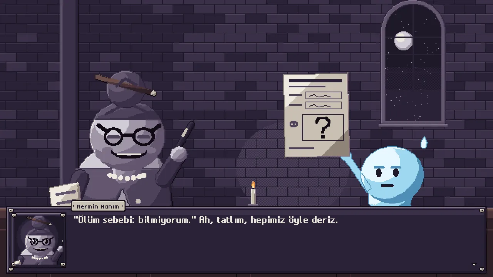
Nermin Hanım yeni stajyerin formunu inceliyor.
Dosya 0001
Arşivin en eski dosyası. Dünyada ölmesi planlanan ilk kişinin dosyasıdır ve 4000 yıldır üstünde "gecikmiş" damgası taşır. Kimse açmaya cesaret edemez. Oyun boyunca her bölgede bu dosyanın ipuçlarını toplarsınız.
Büyük spoiler: Dosya 0001'in sırrı Hikâyenin ana sürprizini açar
Dosya 0001, Azrail'in kendi dosyasıdır. Dünyanın ilk ölümü planlandığında sıradaki isim Ekrem adında bir çobandı. O gün ruhları götürecek kimse yoktu; Ekrem ölmek yerine ilk ruhu kendisi götürdü ve Azrail oldu. Kendi dosyası hiç kapanmadı.
4000 yıl sonra hiç yaşamadığı "hayatın ortasını" merak edip insan kılığına girdi. Her bölgede gördüğünüz, hiç yaşlanmayan Ebedi Ekrem odur: köyde bakkal, şehirde saatçi, savaşta sıhhiyeci, okyanusta fener bekçisi, antik krallıkta kâhin.
Büyük spoiler: Final ve sonlar Son bölgenin sonunu anlatır
Ölmeyenlerin Diyarı'nın 5. ayında patron ruh olarak Dosya 0001 çıkar: dev, yorgun, uykulu bir yaşlı adam ruhu. Masaya geldiğinde size tek bir seçim sunulur.
Mühürle: Dosya kapanır. Azrail 4000 yıl sonra ilk kez dinlenir ve stajyer yeni Azrail olur. Bay Kuzgun ağlar ama "Bu gözyaşı yönetmeliğe aykırı" der.
Formu yırt: Stajyer dosyayı yırtar ve Ekrem'e bir hayat verir. Ekrem tacını bırakıp köyde bakkal açar. Stajyer yine Azrail olur, ama artık "gecikmiş" damgası taşıyan tek dosya ona aittir.
Gizli son: 18 ipucunun hepsini topladıysanız, seçtiğiniz sonun ardından o sona ait gizli bir sahne açılır. Ekrem ile Bay Kuzgun köy bakkalında çay içer ve Ekrem, stajyerin kusursuz geçiş formunu masaya koyar. El yazısı onunkidir. "İyi seçmişim," der.
Ara Bölüm: Yeni Düzen YENİ
Azrail'in yokluğunda daire yeni kurallar, yeni kâğıtlar ve yeni sakinler edinir. Her yeni şey ilk kez göründüğünde kısa bir sahne ya da Bay Kuzgun'un bir açıklaması gelir; üç büyük olayın kendi ara sahnesi vardır: bodrumun açılması, ilk VIP ve şüphe yüzünden gelen ilk denetim. Bölgeler boyunca VIP'ler, müfettiş ve iskelet grevi küçük sahnelerle sürer.
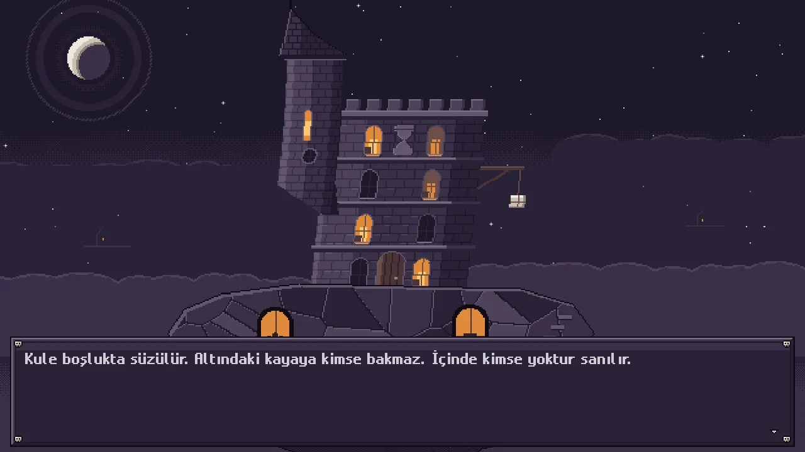
"Kule boşlukta süzülür. Altındaki kayaya kimse bakmaz. İçinde kimse yoktur sanılır."
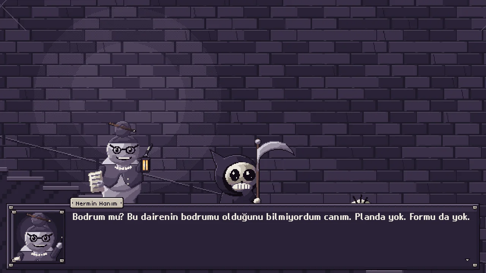
Nermin Hanım: "Bodrum mu? Bu dairenin bodrumu olduğunu bilmiyordum canım. Planda yok. Formu da yok."
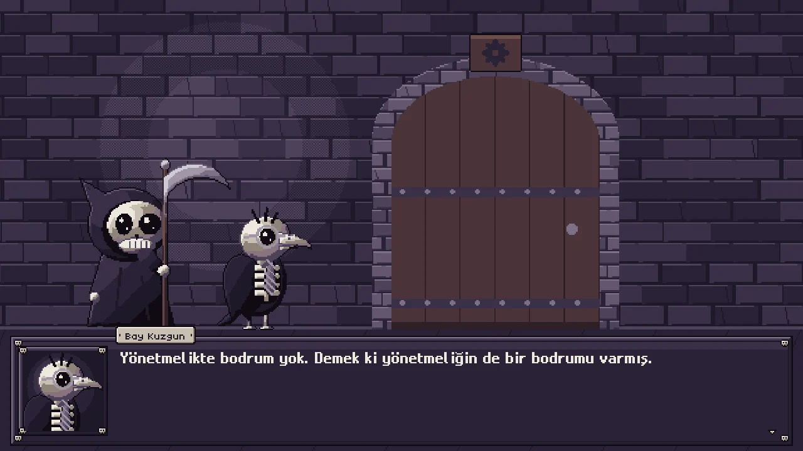
Bay Kuzgun: "Yönetmelikte bodrum yok. Demek ki yönetmeliğin de bir bodrumu varmış."
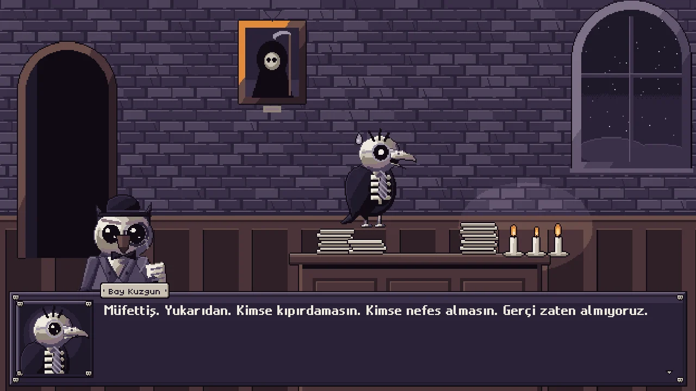
"Müfettiş. Yukarıdan. Kimse kıpırdamasın. Kimse nefes almasın. Gerçi zaten almıyoruz."
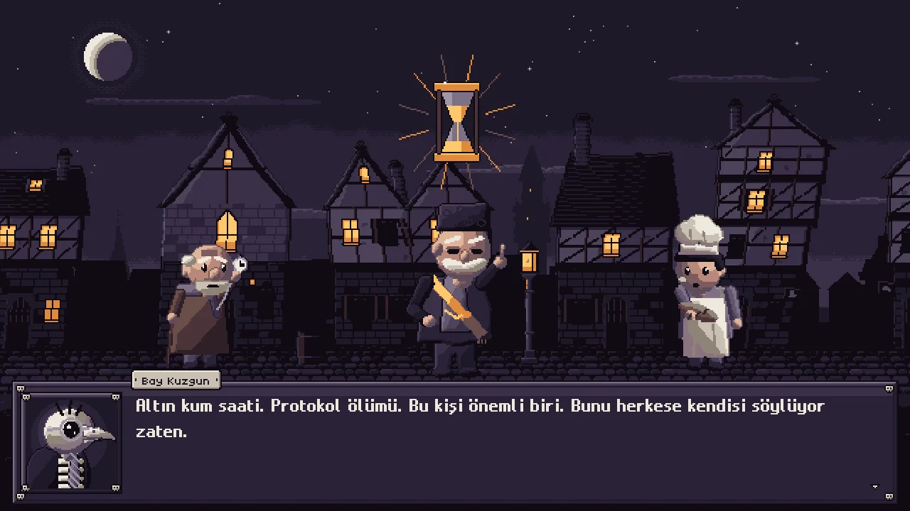
İlk VIP: "Altın kum saati. Protokol ölümü. Bu kişi önemli biri. Bunu herkese kendisi söylüyor zaten."
03 · MADDEBölüm 0: İlk Mesai
Yeni oyun, oyunun rehberi olan kısa bir önsözle başlar. Bölüm 0: İlk Mesai, Bay Kuzgun'un adım adım yönettiği bir oryantasyondur. İlk oyunda atlanamaz; sonraki yeni oyunlarda tekrar oynamak ya da geçmek size sorulur.
Açılış: veda partisi
Ölüm Dairesi'nde 4000 yıl boyunca tek bir izin günü olmamıştır ve o akşam Azrail için bir veda partisi verilir. Pastaya 4000 mum sığmaz ("Bir tane koyduk, temsilen"), hediye pilsiz bir altın saattir ("Zaten artık vaktin bol"). Azrail tükenmişlik iznine çıkar ve kimse onu bir daha görmez. Geriye boş bir masa, sönmüş bir pasta ve tek bir form kalır. Nermin Hanım kuyruktaki ruhlara bakar, siz bir adım öne çıkarsınız ("Ben mi?") ve işe alınırsınız.
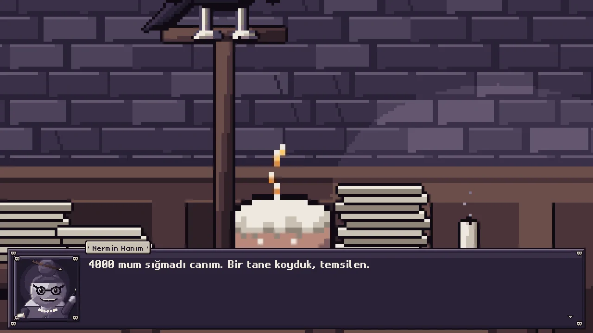
"4000 mum sığmadı canım. Bir tane koyduk, temsilen."
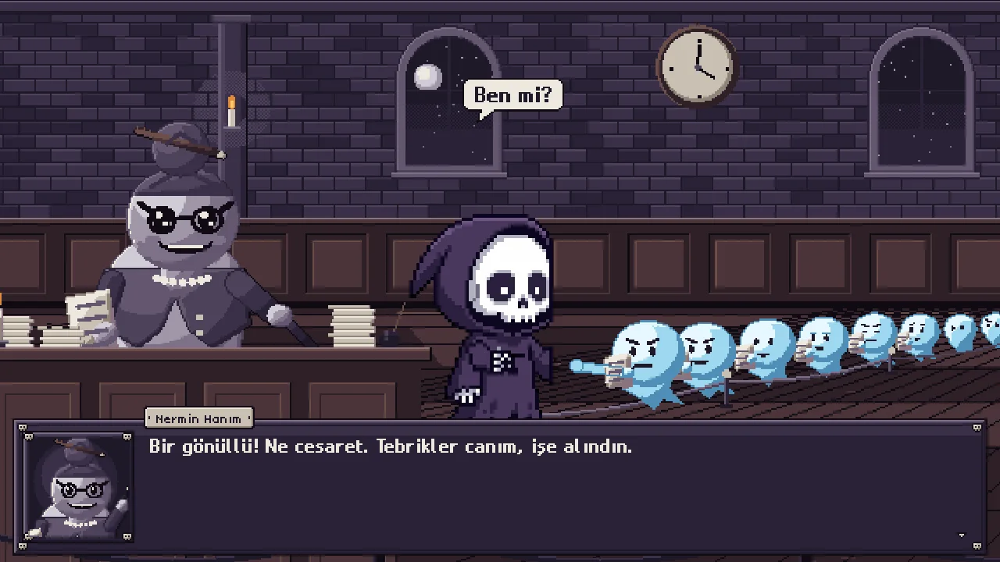
"Bir gönüllü! Ne cesaret. Tebrikler canım, işe alındın."
Oryantasyon: 44 adım
Bay Kuzgun ekranı karartır, dokunmanız gereken yeri bir ışık halkası ve parmakla gösterir. Sırasıyla şunları öğrenirsiniz:
Mühür masasında ilk ölüm belgesini mühürlemek.
Sokağa inip çan çalınca hazır kişiyi biçmek, kaçan ruhu ağla yakalamak, çuvalı ofise taşımak.
Mühür'ü harcamak (masa geliştirmesi) ve hediye edilen ilk Nişan ile Ruh Ağacı'ndan kalıcı bir düğüm almak.
Kuleyi gezmek, Kabul'de ruhları doğru şeride sokmak ve zile basmak.
İskelet Yatakhanesi'ni açıp ilk İskelet Kâtip'i işe almak.
Kotayı, ayın süresini ve ay sonu raporunu tanımak.
"Özetle: Mühür bu dönemin harçlığı, Nişan kalıcı sicil. İkisini karıştıranı ben karıştırırım." — Bay Kuzgun
Kapanış
Oryantasyon bitince Bay Kuzgun size bir Oryantasyon Sertifikası verir ("Çerçeveletme, duvar bütçemiz yok") ve oryantasyon dosyasını yırtar. Oyun sıfırlanır ve gerçek mesai 1. aydan başlar. Kazandığınız Nişan ve Oryantasyon Sertifikası başarımı sizde kalır. Son karede biri pencereyi açar ("Kim açtı o pencereyi?!") ve ekrana tek bir dosya düşer: Dosya 0001.
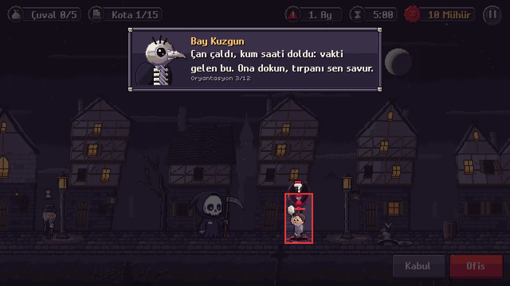
"Çan çaldı, kum saati doldu: vakti gelen bu."
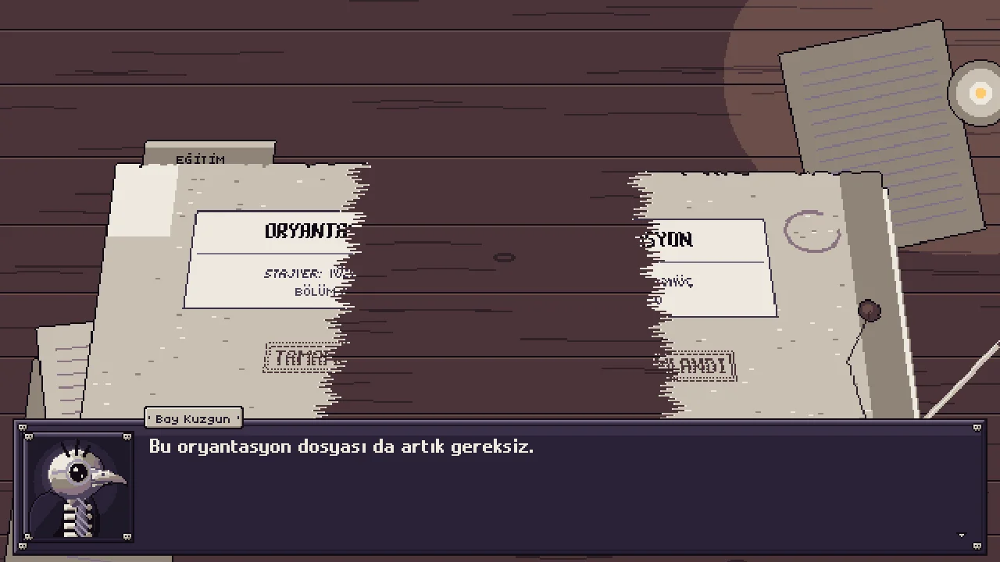
"Bu oryantasyon dosyası da artık gereksiz."
04 · MADDEKarakterler
Stajyer
"YÜZONÜÇ" · DOSYA NO. 2.847.113
Yeni ölmüş sıradan bir memur. Kocaman kafatası, küçük gövdesi ve Azrail'den kalan paslı dev tırpanıyla dairenin yeni saha görevlisi. Konuşmaz, yüz ifadeleriyle tepki verir. Beceriksiz ama azimli.
Oyuncu karakteri
Bay Kuzgun
EN: MR. CORVIN · MÜDÜR VEKİLİ
Kravatlı iskelet kuzgun. Kota takıntılı, huysuz ve iğneleyici; her lafını bir yönetmelik maddesine bağlar. Gizlice Azrail'i özler.
Patronunuz: kota, ay sonu raporu, terfi, Bölüm 0 rehberi
Nermin Hanım
İNSAN KAYNAKLARI
İnsan Kaynakları hayaleti. Aşırı nazik, aşırı bürokrat, her şeye form ister. Gülümsemesi biraz ürkütücü. Herkese "canım" der.
İşe alım, öğretici, reenkarnasyon
Kemikçi Kâmil
ARŞİVCİ
Dedikoducu, koleksiyoncu ve komplo teorisyeni bir iskelet. Kayıp eşyaları ve Son Sözler kartlarını sizden çok sever.
Arşiv, Son Sözler albümü, ipucu panosu
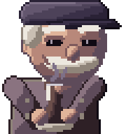
Ebedi Ekrem
HİÇ YAŞLANMAYAN ADAM
Her bölgede başka kılıkta karşınıza çıkan, sakin, yorgun ve nazik bir adam. Köyde bakkal dükkânı işletir. "Acele etme. Burada zaman bekler."
Bakkal, Akçe alışverişi, Dosya 0001 ipuçları
İskelet Muhasebeci
MUHASEBE KATI
Yeşil siperlikli, abaküs başından kalkmayan iskelet. Her kuruşun hesabını sorar; faizi de o verir.
Muhasebe katı, abaküs mini oyunu
Stajyerin rütbe görünümleri
Stajyer baştan çizildi ve artık dört animasyonu var: bekleme, yürüme, tırpan savurma ve ağ atma. Her terfide cübbenin rengi değişir ve yeni bir rütbe işareti eklenir. Bu görünüm sokakta, mühür masasında, ara sahnelerde ve portrede aynıdır.
StajyerMor cübbe
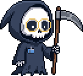
MemurLacivert cübbe, gözlük
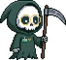
ŞefYeşil cübbe, rütbe şeridi
Kıdemli ŞefBordo cübbe, yaka nişanı
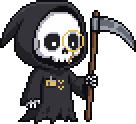
MüdürSiyah cübbe, monokl
Azrail VekiliYarım taç, parlayan tırpan
Bekleme, yürüme, biçme ve ağ atma.
İskelet personel
İskelet KâtipSiz yokken mühür basar
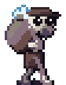
İskelet TaşıyıcıÇuvalı kuyruğa taşır
İskelet BiçiciSokakta hazır kişileri biçer
Hayalet TazıKaçan ruhları kovalar
Spoiler: Ekrem'in bölge kılıkları Ekrem'i her bölgede nerede bulacağınızı gösterir
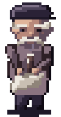
Gotik KöyBakkal
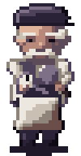
Sisli ŞehirSaatçi
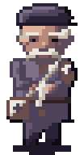
Savaş AlanıSıhhiyeci
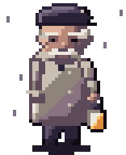
Fırtınalı OkyanusFener bekçisi
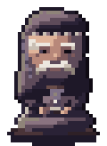
Antik KrallıkKâhin
Nermin Hanım: "Reenkarnasyon formun hazır canım. İmzalaman gerekmiyor, zaten imzaladın."
Yeni Düzen'in yüzleri YENİ
Müfettiş Puhu
YUKARIDAN GELEN MÜFETTİŞ
Melon şapkalı, papyonlu bir baykuş. Denetim ayında gelir; mühür bölgesi daralır, defterler açılır.
Müfettiş Denetimi, karaborsa şüphesi, Muhasebe
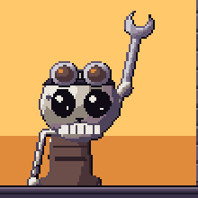
Usta Kemik
TESADÜFLER ATÖLYESİ
Kafasında kaynak gözlüğü, elinde İngiliz anahtarı olan iskelet mühendis. "Dört bin yıldır kimse inmedi! Kazaların hepsini ben tasarladım."
Atölye, düzenekler, tuzaklar
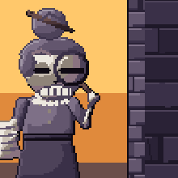
Bayan Kemiksiz
DİLEKÇE BÜROSU
Topuzlu, büyüteçli iskelet memure. "Dilekçeniz var mı? Yoksa sıraya girin. Sıra yoksa da girin. Oluşur."
Dilekçe Bürosu, yalvarmalar
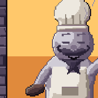
Aşçı Ruhi
KANTİN
Bıyıklı, aşçı şapkalı bir hayalet. Günün çorbası hep aynıdır: kemik suyu.
Kantin, fazla mesai
05 · MADDENasıl oynanır
BiçÇan çalınca kum saati kırmızı yanan kişiye dokun.
YakalaKaçan ruha dokun, çuvala at.
MühürleKulede formu tam zamanında mühürle.
GelişMühürle geliştirme ve kat al, dünyaya dön.
Dünya: biçmek ve yakalamak
Sokak yatay kayar ve yaklaşık üç ekran genişliğindedir. Parmağınızı sürükleyerek kamerayı kaydırırsınız; üstteki mini harita hazır kişileri kırmızı noktayla gösterir. Herkesin başında bir kum saati vardır.
Hazır kişi: Kum saati dolunca belirgin bir ölüm çanı çalar, saat kırmızı yanar ve sallanır. Ona dokunursanız stajyer koşup tırpanı savurur. Hazır olmayan birine dokunmak bir şey yapmaz; kişi sadece "Ne var?" der.
Gecikme: Hazır penceresi (başta 6 saniye) kaçarsa kişi bayılır, ayın kotası 1 düşer ve kişi bir gün sonra yeniden kum saatiyle gelir.
Ruh kaçışı: Biçilen kişinin ruhu yarım saniye sonra en yakın ekran kenarına kaçar. Dokunup ağla yakalarsanız çuvala uçar. Kenara ulaşan ruh kaybolur.
Çuval: Başta 5 ruh alır. Çuval doluyken çıkan ruhlar yakalanamaz ve kaçar.
Kısayollar: Sağ altta kırmızı Ofis düğmesi ve hemen solunda Kabul düğmesi her an açıktır.
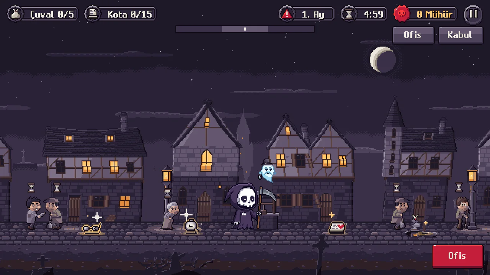
Gotik Köy. Üst barda çuval, kota, ay, kalan süre ve Mühür; sağ altta Kabul ve Ofis.
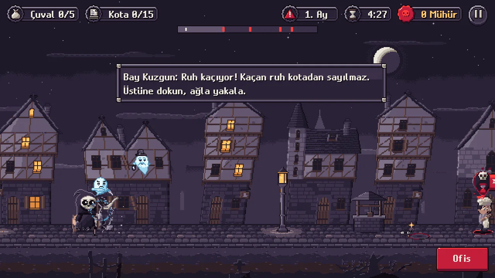
"Ruh kaçıyor! Kaçan ruh kotadan sayılmaz."
Ofis: mühürlemek
Yakalanan ruhlar kuleye girince Kabul katında sıra numarası alır. Sırası gelen ruh mühür masasına oturur, bir laf eder ve önünüze Ölüm Belgesi gelir. Formun üstünde bir imleç sağa sola gider. Doğru anda dokunun:
lekeli
iyi
mükemmel
iyi
lekeli
Mühür
Bölge
Ödül
Kombo
Mükemmel
Çubuğun %15'i, ortadaki kırmızı alan
×2 Mühür
+1
İyi
Çubuğun %45'i
×1 Mühür
sıfırlanır
Lekeli
Geri kalan her yer
×0,5 Mühür
sıfırlanır
Üçü de kotaya 1 ruh olarak sayılır. Lekeli mühür de mühürdür; sadece daha az para getirir.
Ofisteyken, Ruh Ağacı'nda ya da odalardayken dünyada yeni ölüm başlamaz. Zaten kırmızı yanan kişilerin süresi dörtte bir hızla azalır. Dünyaya dönünce bekleyen ölümler birer birer gelir. İskelet Biçici aldıysanız köy siz yokken de işlemeye devam eder.
Ay, kota ve uyarı
Bir ay gerçek zamanda 5 dakika sürer. Ay başında Bay Kuzgun kotayı söyler; HUD'da mühürlenen / kota olarak görünür. Ay bitince Ay Sonu Raporu açılır.
Kota tuttuysa: Kotayı aşan her ruh için prim alırsınız ve sonraki aya geçersiniz.
Kota tutmadıysa: Bir uyarı alırsınız (raporda söndürülmüş bir mum). Uyarılar bölge boyunca birikir, terfide sıfırlanır.
Çuvalda ve kuyrukta kalan ruhlar sonraki aya devreder ama bu ayın kotasına sayılmaz.
Ay Sonu Raporu. Bu sefer olmadı.
Reenkarnasyon
Üçüncü uyarıda stajyer kurbağa olarak yeniden doğar ve bölgenin başına dönersiniz. Mühür, oda geliştirmeleri ve uyarılar sıfırlanır. Kule katları, Nişanlar, Ruh Ağacı, kartlar, ipuçları, eşya koleksiyonu ve başarımlar kalır. Tekrar deneyen biraz daha güçlü başlasın diye her reenkarnasyon Ruh Tecrübesi verir (her biri Mühür +%5, en fazla 3).
Terfi
Her bölge 5 aydır. 5. ay terfi ayıdır: kotayı tutturmanın yanında bölgenin patron ruhunu da yakalayıp mühürlemeniz gerekir. İkisi birden olursa terfi edersiniz: yeni rütbe ve cübbe, yeni bölge, Nişan ve bir terfi ödülü. Terfiden önce elinizde kalan Mühür'ü kule katlarına harcayabilirsiniz, çünkü terfide Mühür ve oda geliştirmeleri sıfırlanır.
06 · MADDESeri, pazarlık, kaza ve emirler YENİ
Ana döngüye her ekranda küçük riskler ve seçimler ekleyen altı yeni mekanik. Sokakta seri yapar, yalvaranlarla pazarlık eder, "talihsiz kazalar" düzenlersiniz; masada acil ve çift nüshalı formlar gelir; her ay Bay Kuzgun'un özel emirleri ve beklenmedik olaylar sizi bekler.
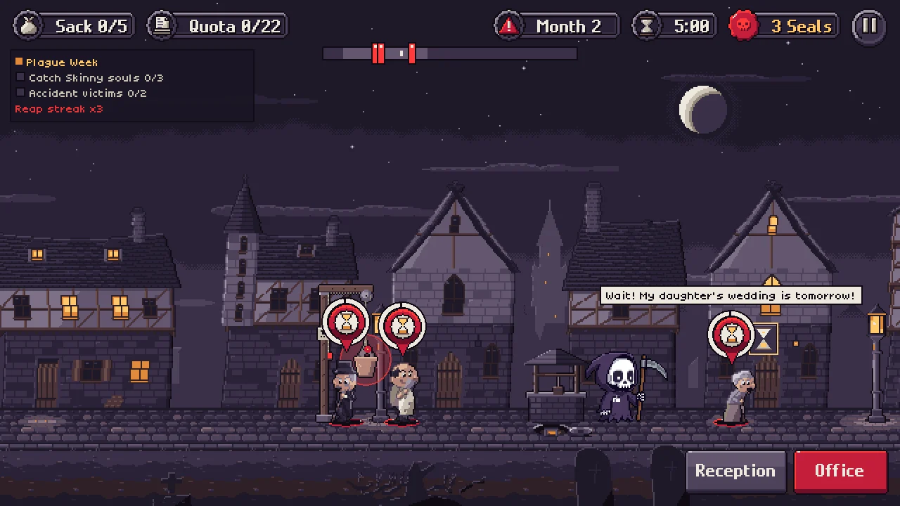
Veba Haftası. Sol üstte bu ayın emirleri ve seri, sağda "Kızımın düğünü yarın!" diye yalvaran bir kadın.
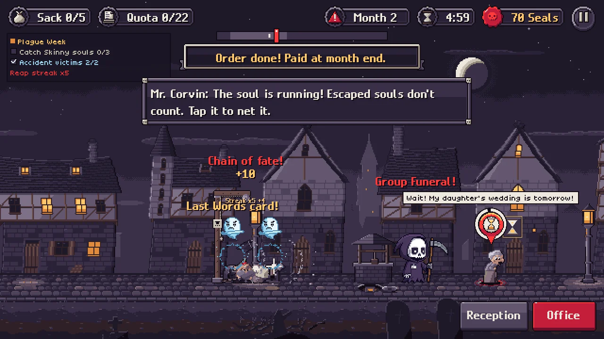
Yük düştü: iki kurban, "Kader zinciri!" ve 5'lik seri ile "Toplu Tören!".
Ekran görüntüleri oyunun İngilizce sürümünden.
1. Hasat Serisi
Kısa aralıklarla art arda biçtikçe seri büyür. İki biçme arasında sokak zamanıyla 6 saniyeden fazla geçerse seri 1'den başlar; bir vaka gecikirse seri sıfırlanır. Seri 2 ve üstündeyken her biçme anında ek Mühür verir ve HUD'da "Hasat serisi xN" yazar. Tırpan, Geniş Savuruş, Toplu Hasat ve kazalar seriyi büyütür; İskelet Biçici büyütmez. Ofisteyken seri süresi de durur.
Seri
Stajyerin üstünde çıkan unvan
2
Çifte Vefat!
3
Üçlü Defin!
5
Toplu Tören!
8
Salgın Gibisin!
12
Kıyamet Memuru!
Ek Mühür, temel ruh değeri × (seri − 1) × 0,2 kadardır ve seri 11'de tavan yapar. Köyde 4'lük seri her biçmede 3 Mühür eder. Ay sonu raporu ayın en iyi serisini de yazar.
2. Yalvaranlar: KABUL ya da RET YENİ
Hazır olan kişilerin yaklaşık beşte biri yalvarmaya başlar ve artık gözden kaçması imkânsız: sokak bir anlığına ağır çekime geçer, kişinin başında kimliğine göre yazılmış büyük bir balon çıkar ("Nazife daha vasiyetini yazmadı! Bir gün ver!") ve altında iki büyük düğme belirir. Ekran dışındaysa kenarda "!" işareti yanar. Oyundaki ilk yalvarma köyün 2. ayında, Bay Kuzgun'un açıklamasıyla gelir. Köyün ilk ayında ve patron ayında kimse yalvarmaz.
KABUL (yeşil, kum saati): Kişiye süre verirsiniz. Saati geri sarılır ve 14 saniye sonra yeniden hazır olur. Ölüm iptal olmaz, yalnızca ertelenir.
RET (kırmızı, tırpan): Stajyer nerede olursa olsun kişi oracıkta biçilir: "Talep reddedildi." Normal ruh değeri verir ve seriyi korur.
Birkaç saniye içinde seçmezseniz kişi yalvarmaya devam eder ve kum saati her zamanki gibi akar.
Dürüstse (yaklaşık 10 kişiden 7'si) yeniden hazır olduğunda bir daha yalvarmaz; ruhunu yakaladığınızda "Minnettar ruh!" ile iki ruh değeri kadar ek Mühür verir.
Yalancıysa hazır olduğu an sokağın uzak ucuna üç kat hızla koşar. Kenara varırsa vaka gecikmiş sayılır: "Kandırıldın! Kota −1". Yetişip biçerseniz normal ruh verir. Yalancıları yalnızca Dilekçe Bürosu'ndaki Yalan Dedektörü ele verir.
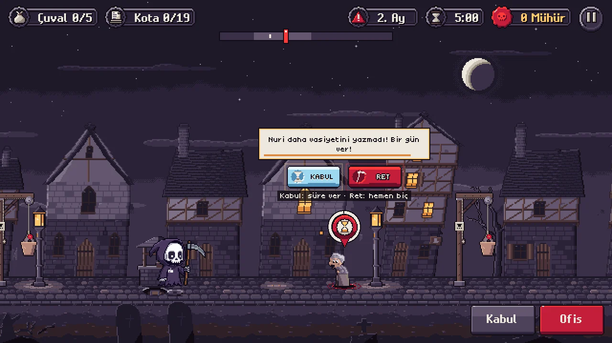
"Kabul: süre ver · Ret: hemen biç."
3. Kaza Düzeneği
Her sokakta, dükkândan ve patron sahnesinden uzakta, ipte yük taşıyan üç ahşap makara durur. Altında hazır biri varsa makara parlar ve sallanır. Dokunduğunuzda yük düşer ve altındaki bütün hazır kişiler biçilir; ruhları yine kaçar ve yakalanması gerekir. Her kurban "Talihsiz kaza!" ile bir ruh değeri kadar ek Mühür verir; iki ve üstü kurbanda "Kader zinciri!" yazar.
Kaza yalnızca zamanı gelmiş kişileri öldürür; yürüyen birine yük düşmez, takvim dışı ölüm olmaz. Altında kimse yokken dokunursanız "Altında kimse yok. Şimdilik." yazar. Düşen yük 25 saniye sonra yerine asılır.
4. Kuzgunun Özel Emirleri
Köydeki ilk ay dışında her ay başında Bay Kuzgun kotaya ek olarak iki yan görev verir. Emirler ekranın sol üstünde küçük bir listede görünür; biten emir yeşil tikle işaretlenir ve "Emir tamam! Ödül ay sonunda." bildirimi çıkar. Ödül ay sonunda Mühür ve Akçe olarak ödenir. Emirler Ebedi Mesai'de de gelir.
Emir
Hedef
Belli bir tipten ruh yakala
3–5 ruh (yalnızca o bölgede çıkan tiplerden)
Mükemmel mühür
6–10
Lekesiz mühür
8–12 mühür, hiç lekeli yok
Hasat serisi
3–5'lik seri
Hiç gecikme olmasın
Bütün ay
Pazarlığa süre ver
1–2 kez
Kaza kurbanı
2–4 kişi
Acil form mühürle
2–3 form
"Lekesiz" ve "hiç gecikme" emirleri ay sonunda değerlendirilir. Sonuçlar ay sonu raporunun not satırında yazar.
5. Ay Olayları
Ayların yaklaşık %40'ı bir olayla başlar. Kuzgun olayı ay başında duyurur, adı da süre sayacının altında durur. Köyün ilk iki ayında ve patron ayında olay çıkmaz.
Olay
Etkisi
Veba Haftası
Ölüm ×1,4, kota ×1,15, ruh değeri ×1,5. "Maske takma, zaten yüzün yok."
Düğün Sezonu
Ölüm ve kota ×0,8, hazır kalma süresi +1,5 sn. Nefes alma ayı.
Ölümsüzlük İksiri
Bir şarlatan yüzünden bazı kum saatleri geri akar; ruh değeri ×1,2.
Müfettiş Denetimi
Mükemmel mühür bölgesi daralır (×0,7), ruh değeri ×1,35.
Dolunay
Ruhlar 1,3 kat hızlı kaçar, ruh değeri ×1,3.
6. Acil ve çift nüshalı formlar
İlk 10 mühürden sonra masaya bazen farklı formlar gelir (patron ruhunun formu her zaman normaldir):
Acil (formların yaklaşık %15'i): sertifikada kırmızı "ACİL!" damgası; imleç iki kat hızlı gider ama form üç kat değerlidir.
Çift nüsha (yaklaşık %15): iki kez mühür basarsınız ve her basışta hedef bölge yer değiştirir. Kalite iki basıştan kötü olanıdır; değer 1,8 kat.
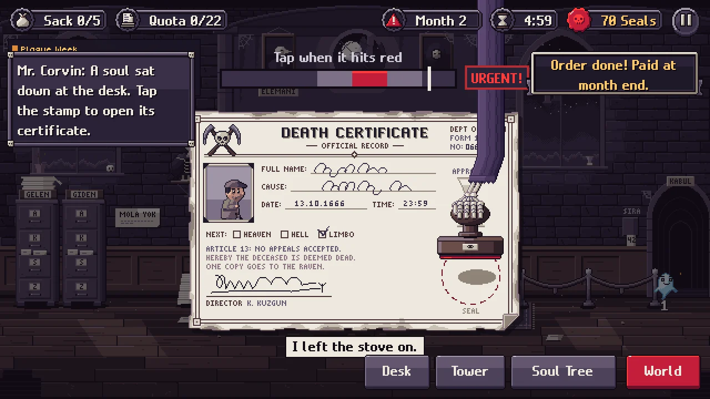
Acil form: imleç hızlı, ödül üç kat.
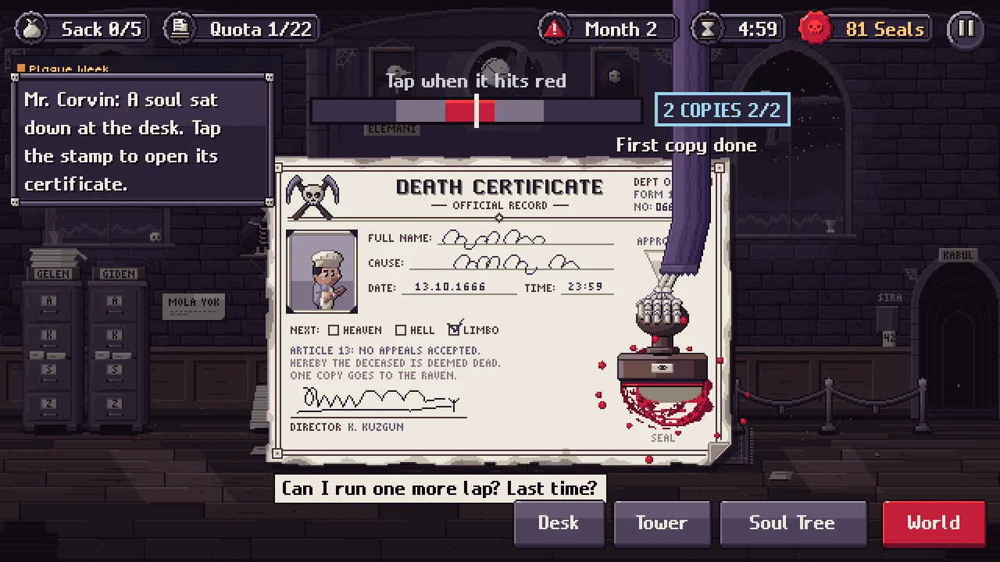
Çift nüsha: "1. nüsha tamam", sıra ikincide.
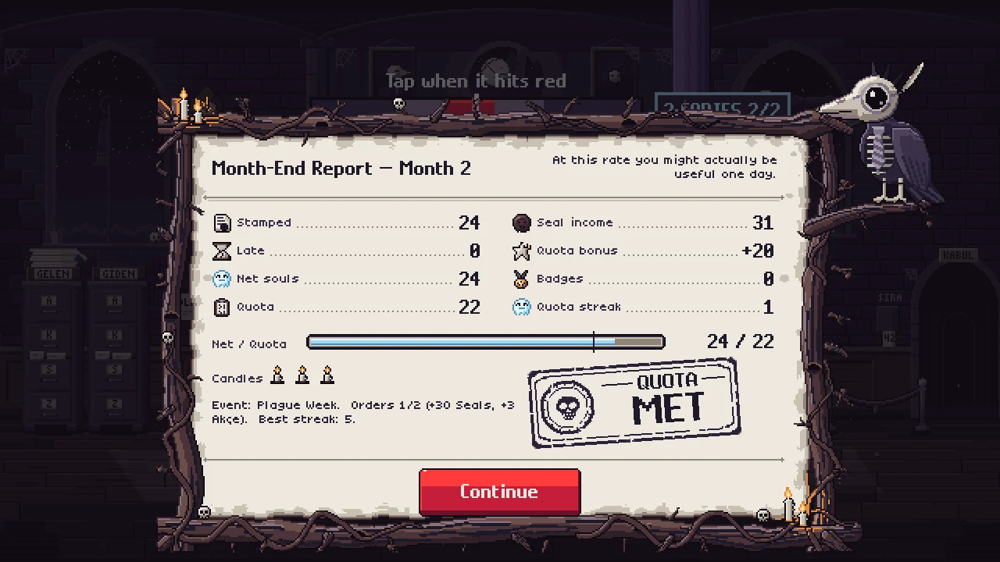
Ay sonu raporu artık ayın olayını, emir sonuçlarını ve en iyi seriyi de yazar.
07 · MADDEBahis, fazla mesai, VIP ve sahte form YENİ
"Yeni Düzen" güncellemesi her aya bir kumar, sokağa önemli bir hedef, masaya da sahtekârlar getirdi. Bunların hepsi köyde, ilk bölgede tanıtılır; her biri ilk kez çıktığında Bay Kuzgun ne yapacağınızı anlatır.
Kuzgunla bahis
Ay başında Bay Kuzgun sorar: "Bahse girer misin?" Üç kart vardır. Ortaya koyduğunuz pay, elinizdeki Mühür'ün %15'idir ve hemen ödenir. Ay sonunda mühürlediğiniz ruhlar sayılır.
Kart
Hedef
Kazanırsanız
Yok, sağ ol
-
Pay ödenmez, risk yok.
Güvenli
Kotanın %10 fazlası
Payın 1,5 katı
Cesur
Kotanın %30 fazlası
Payın 3 katı ve 1 Nişan
Kaybederseniz yalnızca pay gider; bahis hiçbir zaman uyarı getirmez. Köyde bahis 3. aydan itibaren, diğer bölgelerde her ay sorulur; Ebedi Mesai'de de vardır. Bahsin durumu emir listesinde "Bahis: 25/30 (Cesur)" gibi görünür.
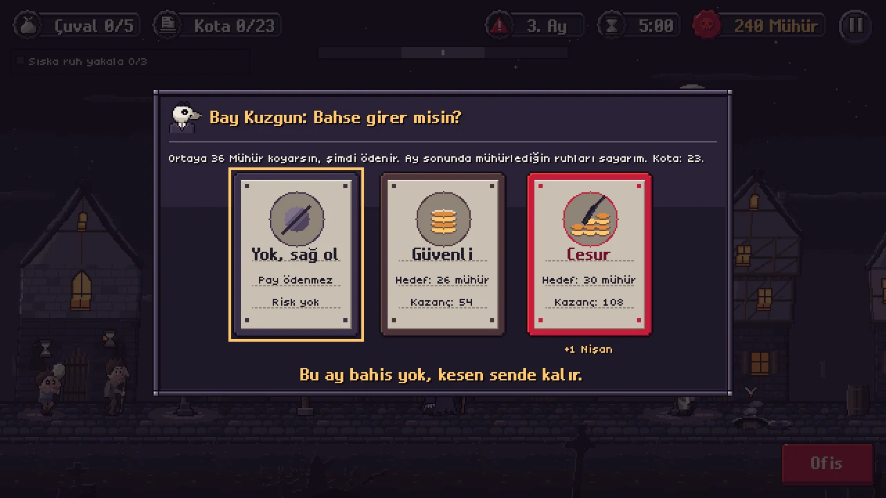
Kota 23: Güvenli 26 ruh ister, Cesur 30.
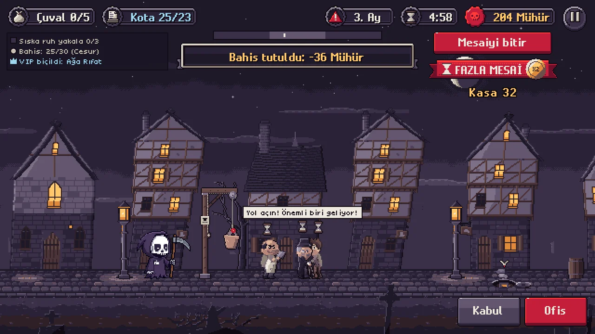
Kota tamam, fazla mesai sürüyor: kasada 32 Mühür birikmiş.
Fazla mesai
Kotayı ay bitmeden doldurursanız bir kart çıkar: Mesaiyi bitir ya da Fazla mesaiye kal. Bitirirseniz ay her zamanki gibi erken kapanır. Kalırsanız ekranda kırmızı "FAZLA MESAİ x2" bandı belirir ve bundan sonraki her mühür iki katını bir kasaya yatırır. Kasa ay sonunda ödenir; ama fazla mesaide ilk gecikmiş vaka kasanın tamamını yakar. İstediğiniz an HUD'daki "Mesaiyi bitir" ile kasayı alıp ayı kapatabilirsiniz.
VIP ölümü
Ayda en fazla bir kez sokakta altın kum saatli önemli biri belirir: muhtar, falcı, tefeci, belediye başkanı, kaptan... Her VIP'in bir kuralı vardır ve kart bunu söyler:
Yer: Yalnızca işaretli bir yerde biçilebilir, örneğin "çeşme başında". VIP oradan birkaç kez geçer.
Zaman: Yalnızca kısa bir pencerede biçilebilir, örneğin saat kulesi çalarken.
Koruma: İki korumayla yürür. Önce korumalardan birini biçerseniz VIP kaçar.
Doğru biçilen VIP'in ruhu 5 kat değerlidir ve 1 Nişan verir. Kaçırırsanız kotada 3 gecikmiş vaka sayılır ama uyarı gelmez. Kartı yeniden görmek için emir listesindeki VIP simgesine dokunun.
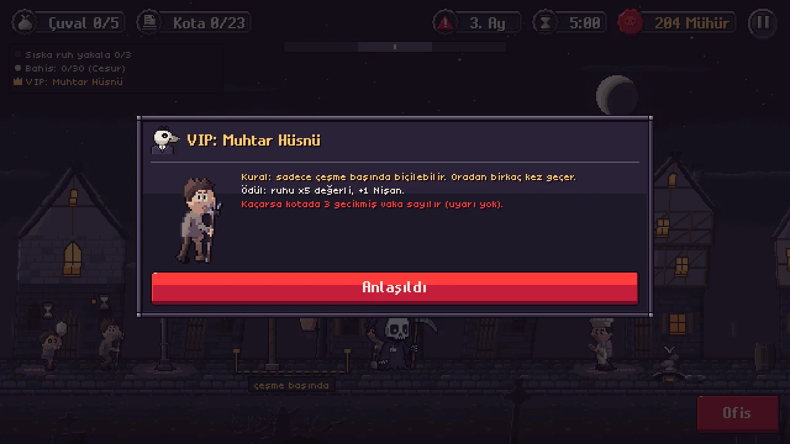
VIP kartı: Muhtar Hüsnü yalnızca çeşme başında biçilebilir.
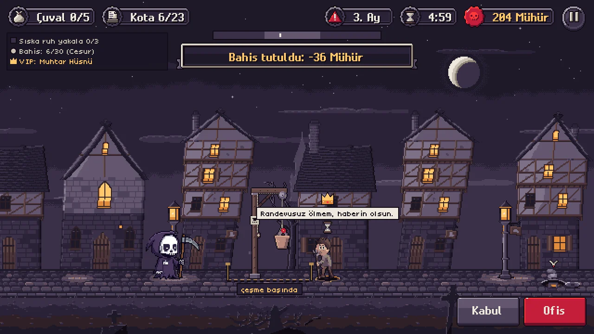
Kesik çizgili alan çeşme başı. Muhtar: "Randevusuz ölmem, haberin olsun."
Ruh kimlikleri ve yeni form görünümleri
Artık her ruhun bir kimliği var. Ölüm belgesinde ad soyad, doğum ve ölüm tarihi, yaş, ölüm sebebi ve iki satırlık bir hayat hikâyesi yazar ("Hayatının aşkını çeşme başında buldu, sonra kaybetti."). Her form türünün kendi görünümü vardır: acil formda kırmızı ACİL damgası ve yırtık köşe, çift nüshada karbon kâğıdıyla iki sayfa, VIP formunda altın kenarlı parşömen ve mum mühür.
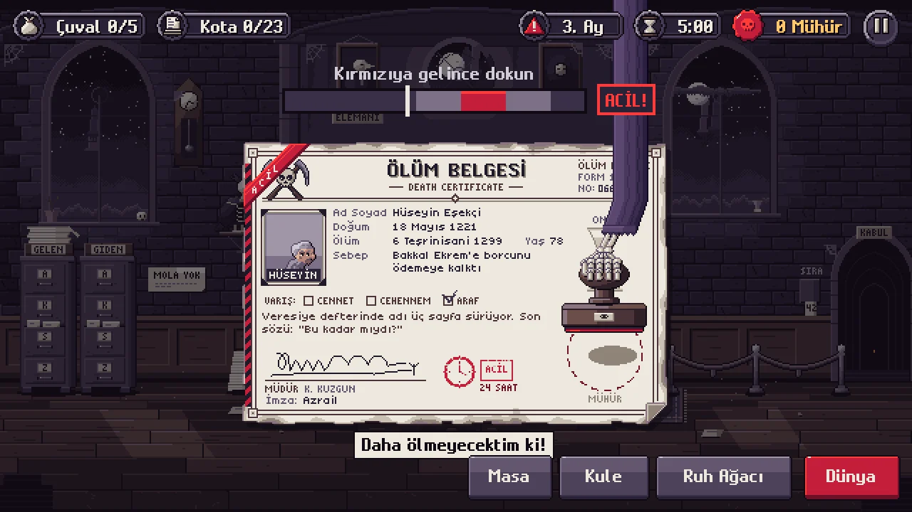
Acil form: "Daha ölmeyecektim ki!"
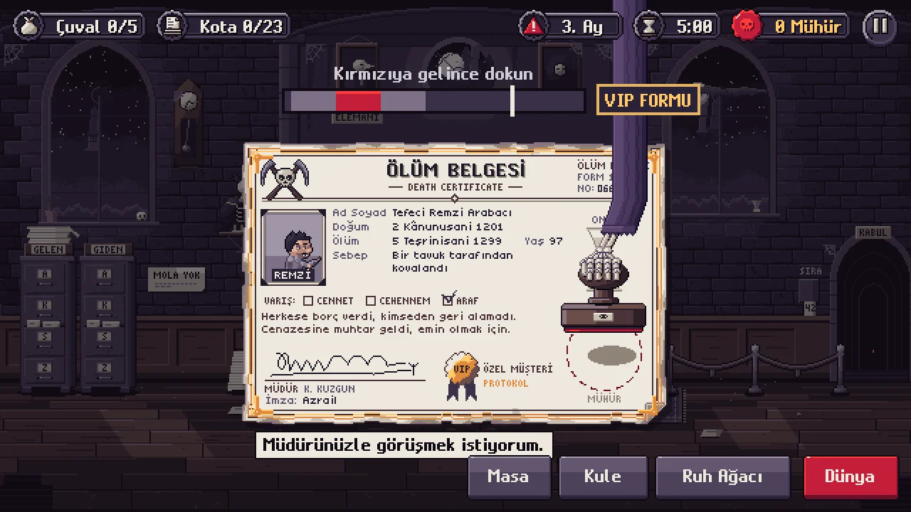
VIP formu: Tefeci Remzi Arabacı, 97 yaşında.
Sahte form
İlk 15 formdan sonra masaya arada bir sahte form gelir. Sahte formda her zaman tek bir ayrıntı tutmaz: ölüm tarihi doğumdan önce, yaş tarihlerle uyuşmuyor, daire mührü eğri ya da tuhaf renkte, fotoğraftaki isim formdakinden farklı, imza yanlış yazılmış ("Azrael") ya da ölüm sebebi "ölümsüzlük".
RET düğmesi mühür şeridinin yanında durur (ilk sahte formla birlikte görünür). Sahteyi reddederseniz "Sahte yakalandı!" ile ek Mühür alırsınız; ruh sıraya geri döner ve daha sonra yeni bir formla gelir.
Gerçek bir formu reddederseniz ruh şikâyet eder: Mühür kaybedersiniz ve kombo bozulur.
Sahteyi mühürlerseniz mühür basılır, sonra "SAHTE!" yazar: değer sıfır, kombo bozulur.
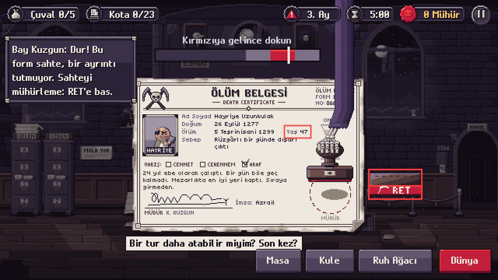
İlk sahte form: Bay Kuzgun uyarır, tutmayan ayrıntı (yaş) bir kez işaretlenir.
Karaborsa ruh
Ekrem bazen ofis penceresinde belirip fısıldar: "Kuzgun saymaz ki bunu. 6 Akçe, peşin." Sat derseniz ruh Ekrem'le gider: mühür yok, Mühür yok ve ruh kotaya sayılmaz, ama Akçe sizin. Hayır derseniz normal mühürlersiniz. Ayda en fazla iki teklif gelir, VIP ruhlar için hiç gelmez.
Dikkat: her satış (ve mühürlenen her sahte form) gizli bir şüphe sayacını artırır. Şüphe dolarsa sonraki ay Müfettiş Denetimi zorla gelir.
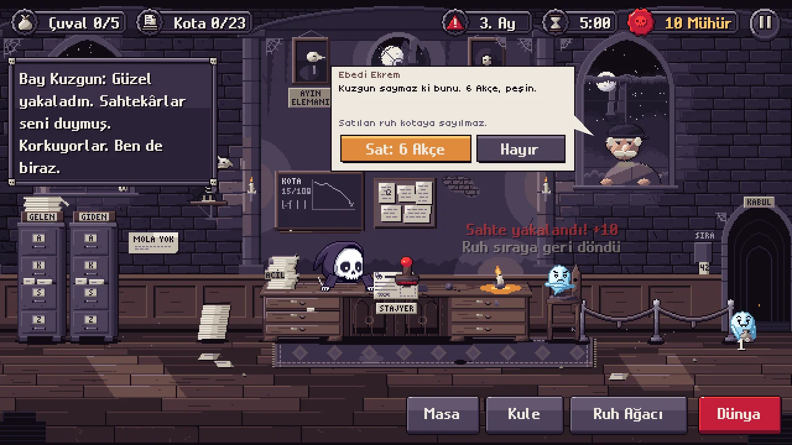
Ekrem'in teklifi. Satılan ruh kotaya sayılmaz.
Yeni tuzaklar
Tesadüfler Atölyesi'ndeki yükseltmelerle sokağa makaraların yanında iki tuzak daha eklenir: muz kabuğu ve gevşek kiremit. Her sokakta birer tane bulunur ve tıpkı makara gibi, yalnızca zamanı gelmiş kişileri biçer.
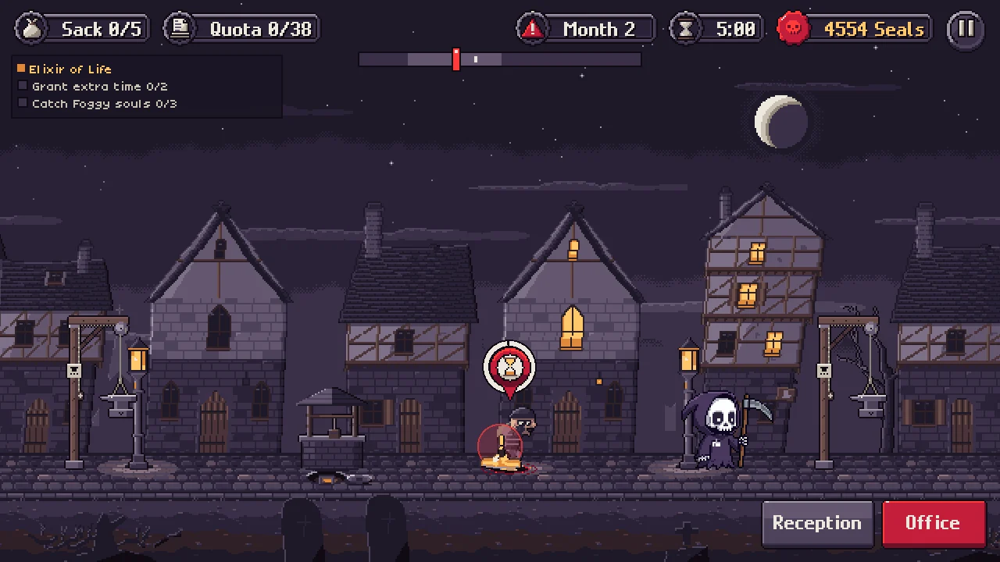
Muz kabuğu kurulu, altında zamanı gelmiş biri.
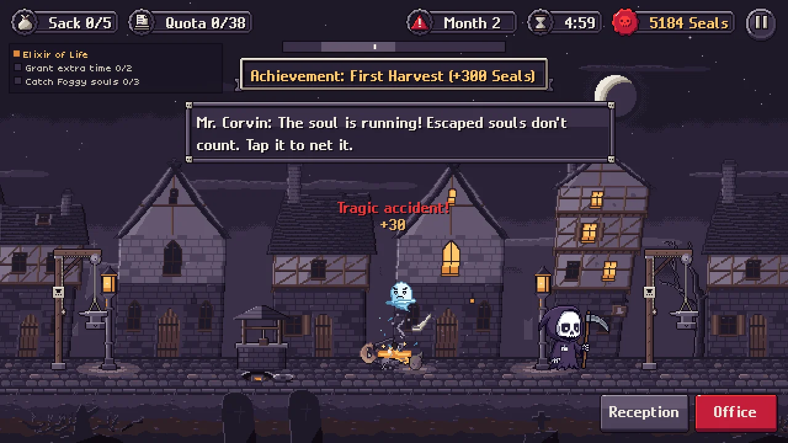
"Talihsiz kaza!" (İngilizce sürümden)
08 · MADDERuh tipleri
Her bölgede farklı insanlar yaşar ve her biri farklı bir ruh bırakır. Değer çarpanı, o ruhun kaç Mühür ettiğini gösterir.
Ruh
Davranış
Değer
Huysuz
Düz çizgide yavaşça kaçar.
×1
Sıska koşucu
Neredeyse iki kat hızlı ve zikzak çizerek kaçar.
×1,2
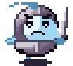
Zırhlı şövalye
Yakalamak için iki dokunuş gerekir.
×1,5
Para çuvallı
Yakalanınca anında üç katı değerinde Mühür verir.
×3
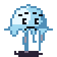
Sis ruhu
Sisin içinde görünmez. Ruh Kokusu ya da sis feneri gösterir.
×1,3
Boğulmuş
Her 1,5 saniyede bir suya dalar; dalarken dokunulamaz.
×1,4
Kedi
Ağdan bir kez kayıp yakında yeniden belirir; iki kez yakalanmalı.
×2
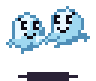
İkizler
Çıkınca ikiye bölünür; ikisi ayrı ayrı yakalanır.
×0,8 + ×0,8
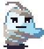
Mumya
Mühürlendikten sonra %25 ihtimalle kuyruğa geri yürür.
×1,6
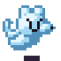
Hayvan ruhu
Yalnızca lağımda. Kotaya sayılmaz, biraz Mühür getirir.
×0,35
Patron ruh
Yavaş ama sekiz dokunuş ister ve her dört dokunuşta yer değiştirir.
×20
09 · MADDEBölgeler ve rütbeler
Oyun altı bölgeden oluşur. Her bölge bir rütbeye karşılık gelir ve kendine özgü bir mekanik getirir. Kotalar bölgeden bölgeye büyür. Ulaştığınız bölgeler arasında bölge seçimi ekranından geçebilirsiniz.
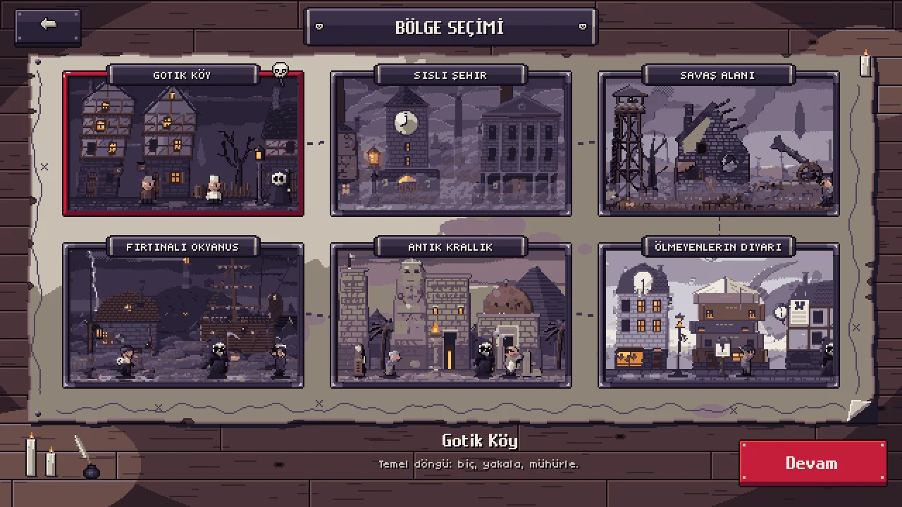
Bölge seçimi ekranı.
BÖLGE 1 · STAJYER
Gotik Köy
Eğri çatılı evler, fırıncılar, nineler ve boğaya güvenen çiftçiler. Temel döngüyü burada öğrenirsiniz.
Mekanik
Öğretici, temel döngü
Patron
Dev Öfkeli Değirmenci
Yöre eşyaları
Örgü şişleri, pipo, tahta takunya
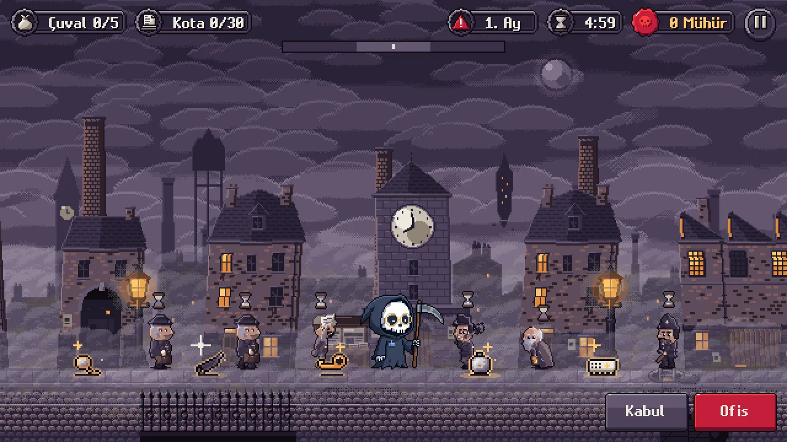
BÖLGE 2 · MEMUR
Sisli Şehir
Fabrika bacaları ve gaz lambaları. Sisin içinde bazı ruhlar görünmez olur.
Mekanik
Sis ruhları, İskelet Yatakhanesi açılır
Patron
Fabrika Patronu
Yöre eşyaları
Monokl, şemsiye, kulak borusu
BÖLGE 3 · ŞEF
Savaş Alanı
Yıkık kiliseler, siperler ve dikenli teller. Ölümler borazan sesiyle, dalgalar halinde gelir.
Mekanik
Ölüm dalgaları: üç kişi birden hazır olur, ama pencere 2 saniye daha uzun
Patron
Ölmeyi Reddeden General
Yöre eşyaları
Madalya, tahta bacak, zar
BÖLGE 4 · KIDEMLİ ŞEF
Fırtınalı Okyanus
Batık direkler ve sallanan güverteler. Boğulmuş ruhlar suya dalar.
Mekanik
Gelgit: her 20 saniyede bir dalga güverteyi yalar, insanları ve ruhları sürükler. 2,5 saniye önceden uyarı sesi gelir.
Patron
Batık Geminin Kaptanı
Yöre eşyaları
Şişedeki mektup, pusula, lastik ördek
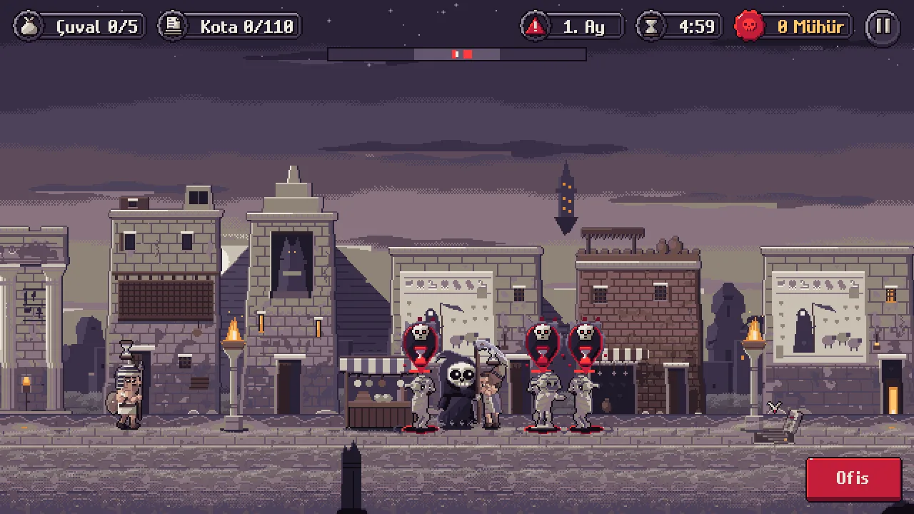
BÖLGE 5 · MÜDÜR
Antik Krallık
Çöl, kerpiç evler ve piramitler. Ölüler pek de ölü kalmaz.
Mekanik
Mumyalar: biçilen kişi %25 ihtimalle mumya olarak kalkar. Kaçırırsanız ceza yok, bonus ruhtur.
Patron
Firavun (yakalanınca ikiye bölünür)
Yöre eşyaları
Altın bok böceği, mumya sargısı, çatlak taç
BÖLGE 6 · AZRAİL VEKİLİ
Ölmeyenlerin Diyarı
Soluk, sisli ve sessiz bir yer. Burada zaman bile kararsız.
Mekanik
Geri akan kum: hazır bir kum saati aniden geri akabilir; kişi 7 saniye sonra yeniden hazır olur.
Patron
Dosya 0001
Yöre eşyaları
Kırık kum saati, vasiyetname, alyans
10 · MADDEPatron ruhlar
Her bölgenin 5. ayında, ayın ortasında sokağın ortasındaki patron mekânında dev bir ruh belirir. 20 saniye ekranda kalır; kaçarsa bir dakika sonra yeniden gelir. Ay biter ve patron yakalanmamışsa ay "tutmadı" sayılır ve 5. ay tekrar oynanır.
Dev Öfkeli DeğirmenciGotik Köy · değirmen
Fabrika PatronuSisli Şehir · fabrika
Ölmeyi Reddeden GeneralSavaş Alanı · siperli tepe
Batık Geminin KaptanıOkyanus · batık gemi
FiravunAntik Krallık · piramit
Patron
Son sözü
Dev Öfkeli Değirmenci
"Kimse beni bir yere götüremez! Unum yarım kaldı!"
Fabrika Patronu
Para çuvallı dev bir ruh
Ölmeyi Reddeden General
"Geri çekilmek yok! Ölmek de yok! İkisi aynı emir!"
Batık Geminin Kaptanı
"Kaptan gemisini terk etmez! Gemi beni terk etti, ama bu teknik bir ayrıntı!"
Firavun
"Ben bir tanrıyım! Tanrılar ölmez! Bunu fermanla belgeledim!"
Dosya 0001
"Uzun uyudum. Ama sanırım beni almaya gelen biri var."
Firavun bir kez yakalanınca iki küçük ikize bölünür; her ikiz 4 dokunuş ister ve patron ancak ikisi de yakalanınca çuvala girer. İkizlerden biri kaçarsa öbürü de gider.
Dev Öfkeli Değirmenci, değirmenin önünde.Firavun, piramit girişinde.
11 · MADDEKule ve odalar
Ölüm Dairesi boşlukta süzülen eğri bir kulede çalışır. Kuleyi kat kat Mühür ile satın alıp büyütürsünüz ve katlar kalıcıdır; terfide ya da reenkarnasyonda kaybolmaz. Her kat girilebilen bir odadır: dokunulabilir eşyaları, küçük bir bonus mini oyunu ve o odada işleyen geliştirmeleri satan bir panosu vardır. Odadayken dünyada zaman durur.
Ruhların numara aldığı bekleme salonu. Bir ruha dokunun ya da onu sürükleyin, sonra aynı renkteki şeride bırakın (Huysuz, Sıska, Zırhlı, Hayvan). Doğru şerit ekstra Mühür verir. Zile basınca çuvaldaki ruh "ding!" sesiyle kabul edilip masaya yollanır. Klavye ve oyun kumandasıyla da oynanır. Stajyerin dolabında Tırpan ve Ağ geliştirmeleri satılır.
Mühür Masası
Baştan açık · Ofis ekranının kendisi
Formların mühürlendiği masa. Masa butonu mühür geliştirmelerini açar.
Arşiv
Mini oyun: Dosyala
Kemikçi Kâmil'in tozlu rafları. Mühürlediğiniz formlar burada birikir; her formu soyadının ilk harfine göre doğru çekmeceye (A–Ç, D–K, L–R, S–Z) atın. Doğru dosyalar Mühür ve arada bir Son Sözler kartı verir. Son Sözler albümü de buradadır.
İskelet Yatakhanesi
Mini oyun: Uyandırma
Mesai bitince iskeletlerin uyuduğu ranzalar. Çalan çalar saatlere zamanında dokunun, uyanan iskeletler bir süre Mesai Coşkusu ile daha hızlı çalışır. Bütün Personel geliştirmeleri burada satılır.
Muhasebe
Mini oyun: Defteri Denkleştir · ayda bir
Abaküsler ve hiç kapanmayan bir hesap. Defterdeki sayıyı kum saati bitmeden abaküste kurun, elinizdeki Mühür'e faiz alın. Kat İndirimi ve Rüşvet burada.
Gizli Arşiv
Mini oyun: İpleri Bağla
Kasa kapısı, mumlar ve kırmızı ipli komplo panosu. Birbirine ait iki ipucu arasına ip gerin; her doğru çift kısa bir hikâye notu açar ve 1 Nişan verir, bütün pano +3 Nişan.
Kuzgun'un Balkonu
Şef rütbesinde açılır
Bay Kuzgun bütün bölgeyi buradan izler. Teleskoptan bu ayın ilerlemesine bakabilir, bölge haritasını görebilirsiniz. Kuzgunu fazla dürtmeyin; sabrı da bir yere kadar.
Katlar neden açılır YENİ
Katlar hâlâ Mühür ile alınır, ama satın alma düğmesi ancak o kata gerçekten ihtiyaç doğunca açılır. Kilitli katta sebep ve ilerleme yazar, örneğin "Evrak yığını 64/100".
Kat
Sebep
Koşul
Arşiv
Masada evrak yığılıyor
100 form mühürle
İskelet Yatakhanesi
İskeletler grevde: "Yatacak yer yok!" Kat alınana kadar Kabul kuyruğu yavaşlar
150 ruh biç
Muhasebe
Müfettiş defter istiyor
Bir Müfettiş Denetimi ayını geç ya da 8. aya gel
Gizli Arşiv
Bir Son Sözler kartından anahtar düşüyor
12 kart bul ve 4. bölgeye gel
Tesadüfler Atölyesi
İlk kaza
Bir kaza kurbanı
Dilekçe Bürosu
Dilekçeler birikiyor
10 yalvarma kararı (KABUL ya da RET)
Kum Saati Atölyesi
İksir kum saatlerini bozdu
Bir İksir ayını geç ya da 10. aya gel
Kantin
Fazla mesai acıktırdı
Bir kez fazla mesaiye kal
"Masada evrak yığılıyor. Arşiv şart olacak."İskelet grevi: "Yatacak yer yok!"
Bodrum: dört yeni oda YENİ
Kule bir kayanın üstünde süzülür ve o kayanın içine dört oda oyulmuştur. Kule ekranını aşağı kaydırınca (ya da "Bodrum ↓" sekmesine dokununca) görünürler. Her odanın kendi mini oyunu ve yükseltme panosu vardır; dördünü de açmak Bodrum Katı başarımını verir.
Kulenin altındaki kaya ve bodrum odaları. Oda görüntüleri İngilizce sürümden.
Tesadüfler Atölyesi
Mini oyun: Düzenek · İlk kazayla açılır
Usta Kemik'in karmakarışık atölyesi: makaralar, rampalar, muz sandıkları. Beş yuvalı bir rayda topu, rampayı, domino taşlarını ve muzu doğru yere koyup "Çalıştır"a basın; zincir mankene ulaşırsa Mühür kazanır ve sokaktaki bir sonraki makarayı anında doldurursunuz. Makara Yağı, Geniş Yük, Muz Kabuğu ve Gevşek Kiremit burada.
Dilekçe Bürosu
Mini oyun: Dilekçe
Zil, sıra numarası makinesi ve dağ gibi dilekçeler. Bayan Kemiksiz her turda altı dilekçe uzatır; her birinde kimlik, yalvarma ve iki ayrıntı vardır ve üçte biri yalan söyler. KABUL ya da RET deyin. Yalan Dedektörü, Minnet ve Hızlı Karar burada.
Kum Saati Atölyesi
Mini oyun: Yama
Raflarca kum saati ve bir kum fırını. Çatlak bir kum saatindeki üç dört çatlağa kum akıp bitmeden yapıştırıcı sürün. Kusursuz yama Mühür verir ve sonraki ay hazır kalma süresini uzatır. Kum Yaması ve Panzehir burada.
Kantin
Mini oyun: Çorba Dağıt
Uzun masalar, tepsili iskeletler ve gri çorba kazanı. Aşçı Ruhi'nin tezgâhına gelen iskeletin istediğini (çorba, ekmek, çay) verin; turda sekiz sipariş. Puanınız kısa bir süre iskelet personeli hızlandırır ve fazla mesai kasasını büyütür. Çorba Kazanı ve Mesai Sigortası burada.
12 · MADDEGeliştirmeler
Oyunda iki para birimiyle iki tür geliştirme vardır.
Oda geliştirmeleri
Ruh Ağacı
Para
Mühür (her mühürlenen ruhtan)
Nişan (terfi, ipucu, albüm, eşya setleri, nadir postalar)
Nerede
Kule odalarının panolarında
Kulenin çatısındaki ölü ağaç
Terfide
Sıfırlanır
Kalıcıdır
Sayı
4 dal × 9 düğüm
8 kök düğüm + 4 gövde hattı (26 düğüm)
Panoda her satır etkinin "şimdi → sonraki" halini birimiyle gösterir; örneğin Tırpan süresi 0,40 sn → 0,35 sn. Üst kademeler bölge ilerledikçe açılır (K3 ikinci bölgeden, K4 üçüncü bölgeden). Pahalı alımlarda onay penceresi çıkar.
Biçme dalı · Kabul, "Tırpan" sekmesi
Düğüm
Etki
Keskin Tırpan
Savuruş süresi kısalır (0,40 sn'den 0,16 sn'ye kadar)
Koşar Adım
Stajyer daha hızlı koşar
Sabırlı Kum
Hazır penceresi uzar (6 sn'den 8,5 sn'ye kadar)
Uzun Sap
Biçme menzili artar, stajyer daha az yürür
Önsezi
Kum saati hazır olmadan 1,5 sn önce sarı yanıp söner
Geniş Savuruş
Tek savuruş yakındaki 1–3 hazır kişiyi daha biçer
Uysal Ruhlar
Bazı ruhlar kaçmadan doğrudan çuvala girer
Kum Saati Çevir
Yetenek (aşağıya bakın)
Ölüm Defteri
Yetenek (aşağıya bakın)
Yakalama dalı · Kabul, "Ağ" sekmesi
Düğüm
Etki
Büyük Ağ
Ağın yakalama alanı büyür
Geniş Çuval
Çuval +2 (en fazla 15)
Ağır Ruhlar
Ruhlar daha yavaş kaçar
Ruh Mıknatısı
Ruhlar stajyere doğru çekilir
Ruh Vakumu
Yetenek (aşağıya bakın)
Geri Dönen Ruhlar
Kaçan ruh bazen ekranın öbür ucundan geri girer
Ruh Kokusu
Ruhlar mini haritada görünür, sis ruhları yarı görünür olur
Taşıyıcı Kuzgunlar
Çuval doluyken kuzgunlar ruhları kuyruğa taşır
Zırh Delici
Zırhlı, kedi ve patron ruhlarda her dokunuş 2 sayılır
Ruhlar masaya daha hızlı gelir, imleç turu kısalır
Kota Primi
Masa
Kota primi +%50
Toplu Mühür
Masa
Tek dokunuşla 2–4 form mühürlenir
Kombo Mühür
Masa
Art arda mükemmellerde artan çarpan
Kat İndirimi
Muhasebe
Kule katları %10 ucuzlar
Rapor Makyajı
Arşiv
Kotanın küçük bir eksiği "tuttu" sayılır (primsiz)
Rüşvet
Muhasebe
Ayda bir, Mühür karşılığında bir uyarı silinir
Personel dalı · İskelet Yatakhanesi
İskelet ordunuz. Bu dal için Yatakhane katını açmış olmanız gerekir.
Düğüm
Etki
İskelet Kâtip
Ofiste kendiliğinden "iyi" mühür basar
İskelet Taşıyıcı
Çuvaldaki ruhları kuyruğa taşır
İskelet Biçici
Dünyada stajyerin yanında yürür, hazır kişileri biçer. Siz ofisteyken de çalışır.
Hayalet Tazı
Kaçan ruhları kovalayıp yakalar
Fazla Mesai
Bütün iskeletler +%15 hızlı
Sendika
Kâtip mühürlerinin bir kısmı mükemmel olur
Kuzgun Sürüsü
Yetenek (aşağıya bakın)
Vardiya
İkinci kâtip ve ikinci biçici
Yönetim Kurulu
Bütün personel etkileri +%25
İskelet Biçici ve Hayalet Tazı iş başında.
Ruh Ağacı · kalıcı güçler
Ofiste yukarı kaydırınca kulenin çatısındaki dev, ölü ağaç açılır. Buradaki düğümler Nişan ile alınır ve oyun boyunca hiç sıfırlanmaz.
Ruh Ağacı.
Kök düğüm
Etki
Tecrübe
Bütün Mühür kazancı +%10 / seviye
Cep Harçlığı
Her bölgeye bir miktar Mühürle başlarsınız
Kıdem
Başlangıç çuvalı +1
Kuzgunun Gözdesi
Her bölgedeki ilk uyarı "sözlü ihtar" olur ve sayılmaz
Hatıralar
Son Sözler kartı bulma şansı artar
Hızlı Öğrenen
Oda geliştirmeleri ucuzlar
Eski Dost
Her bölgeye bir İskelet Kâtiple başlarsınız
Azrail'in İzi
İpucu taşıyan kişinin üstünde küçük bir parıltı yanar
Köklerin üstünde dört gövde hattı yükselir: Tırpan (savuruş, pencere, menzil), Mühür (mükemmel alan, ruh değeri, prim, kombo), Daire (ağ, çuval, kat fiyatı, iskelet hızı) ve Taç. Taç hattı en pahalısıdır: bir uyarı mumu daha, patron ruhun daha az dokunuşla yakalanması ve her aya 15 saniye ek süre.
Yeni Düzen yükseltmeleri YENİ
Yeni mekaniklerin her biri için oda panolarına Mühür'le alınan yükseltmeler eklendi:
Yer
Yükseltmeler
Kabul / Tırpan
Seri Defteri (seri süresi uzar), Seri Kalkanı (aydaki ilk gecikme seriyi bozmaz), Seri Tavanı (seri bonusu daha yükseğe çıkar)
Tesadüfler Atölyesi
Makara Yağı (makara daha çabuk dolar), Geniş Yük (kaza alanı büyür), Muz Kabuğu ve Gevşek Kiremit (yeni tuzaklar)
Dilekçe Bürosu
Yalan Dedektörü (yalancının burnu seğirir, alnı terler), Minnet (minnettar ruh daha çok öder), Hızlı Karar (ağır çekim uzar)
Mühür Masası
Acil Masası (acil formda imleç yavaşlar), Karbon Kâğıdı (çift nüsha bazen tek basışta biter), Büyüteç (sahte formdaki ayrıntı bir an parlar)
Muhasebe
Üçüncü Emir, Emir Değiştir, Hava Raporu (gelecek ayın olayını görürsün), İtiraz (bölge başına bir olayı veto et)
Kum Saati Atölyesi
Kum Yaması (hazır kalma süresi uzar), Panzehir (İksir ayında kum saatleri daha az geri akar)
Kantin
Çorba Kazanı (Kantin etkisi güçlenir), Mesai Sigortası (fazla mesaideki ilk gecikme kasanın yalnızca yarısını yakar)
Ruh Ağacı'na da Nişan'la alınan, kalıcı ve küçük etkili yeni bir gövde hattı geldi: Yeni Düzen. Seri süresi, makara bekleme süresi, minnettar ruh ödülü, acil form hızı ve emir ödülü için birer düğüm içerir.
Ruh Ağacı'nda Yeni Düzen dalı: "Seri Alışkanlığı".
13 · MADDEYetenekler
Dört yetenek vardır ve alınan her biri alt bardaki kendi yuvasına yerleşir. Bekleme süresi yoktur: her yeteneğin halkası oynadıkça dolar, dolunca yanar, dokununca kullanılır ve boşalır. Kullanacak hedef yoksa yetenek harcanmaz.
Yetenek
Halka neyle dolar
Etki
Kum Saati Çevir
4 mükemmel mühür
En acil hazır kişinin kum saati 10–14 saniye durur
Ruh Vakumu
8 biçme
Ekranda kaçan bütün ruhlar çuvala uçar
Kuzgun Sürüsü
3 sokak buluntusu
30 saniye boyunca ölümler 3 saniye önceden işaretlenir; stajyer 10 saniye %40 hızlı koşar
Ölüm Defteri
Kotaya mühürlenen 10 ruh
Deftere tek kaşe: en yakın 3 hazır kişi biçilir
14 · MADDESokak, bakkal ve lağım
Ölüm beklerken
Sokakta kimse hazır değilken de yapacak şey vardır:
Kayıp ruhlar: Yüzyıllardır yol arayan eski ruhlar ekrandan süzülür. Dokunun, birkaç Mühür verirler. "1543'ten beri yol arıyorum. Teşekkürler evlat."
Kuzgun postası: Bir kuzgun mektupla geçer. Zarfı düşürün: içinden bir kese Mühür, Bay Kuzgun'dan bir not ya da nadiren bir Nişan çıkar. "Madde 31: Boş zaman yasaktır. Bu notu okumak da."
Kayıp eşyalar: Kaldırımda altın gibi parıldayan eşyalar düşer. Dokunun, stajyer yürüyüp cebine atar.
Akçe: Ölenler bazen bozuk para düşürür. 14 saniye içinde dokunup toplayın.
Kayıp eşya koleksiyonu
Kaldırımda bulunabilecek 29 eşya türü var: her yerde çıkan 11 ortak eşya ve her bölgeye özgü 3'er yöre eşyası. Her eşyanın kendi kara mizahlı notu vardır ve Ekrem'e Akçe karşılığında satılır. Koleksiyonu tamamlamak Nişan getirir:
İlk sekiz klasik eşyanın hepsini bulmak: +1 Nişan.
Bir bölgenin üç yöre eşyasını bulmak: o bölge için +1 Nişan (altı bölgede ayrı ayrı).
29 türün hepsini bulmak: +1 Nişan ve Eksiksiz başarımı.
Bütün eşya türleri.
Ortak eşyalar (Akçe)
Kırık gözlük3
Takma diş4
Aşk mektubu5
Para kesesi8
Cep saati9
Bez bebek4
Nal3
Paslı anahtar6
Cep matarası5
Ödenmemiş fatura1
Piyango bileti2
Yöre eşyaları (Akçe)
Örgü şişleri · Köy4
Pipo · Köy5
Tahta takunya · Köy3
Monokl · Şehir7
Şemsiye · Şehir4
Kulak borusu · Şehir6
Madalya · Savaş8
Tahta bacak · Savaş4
Zar · Savaş3
Şişedeki mektup · Okyanus5
Pusula · Okyanus7
Lastik ördek · Okyanus3
Bok böceği · Antik8
Mumya sargısı · Antik2
Çatlak taç · Antik9
Kırık kum saati · Ölmeyenler6
Vasiyetname · Ölmeyenler5
Alyans · Ölmeyenler9
NOTPiyango bileti. Kazanmış! Çekiliş cenazeden bir gün sonraymış.
Ortak eşya
NOTLastik ördek. Gemi battı. Ördek batmadı. Doğa adil değil.
Fırtınalı Okyanus
NOTŞemsiye. Yağmurdan korumuş. Düşen kiremitten korumamış.
Sisli Şehir
Ekrem'in bakkalı
Ebedi Ekrem'in dükkânında kayıp eşyaları Akçe karşılığında satar (Sat sekmesi sayfa sayfa gezilir), Akçe ile küçük yardımlar alırsınız. "Acele etme. Burada zaman bekler."
Her bölgenin altında kendine özgü bir lağım vardır. Giriş, sokakta açık duran bir kapaktır: köyde ve şehirde rögar, savaşta siper kapağı, okyanusta güverte ambarı, antikte mezar kapağı. Aşağıda fareler ve başka hayvanlar kendi sıralarıyla ölür. Hayvan ruhları kotaya sayılmaz ama Mühür getirir, geciken hayvan da ceza yazdırmaz. Çıkmak için merdivene dokunun. "Logarda kalan stajyeri fareler terfi ettirir."
Köyün lağımı.
15 · MADDESon Sözler ve Dosya 0001
Son Sözler kartları
Her ölü, son sözünü bir kart olarak bırakır. Toplam 68 kart var: köy için 16, diğer beş bölge için 10'ar ve her bölgede düşebilen 2 arşiv kartı. Nadirlikler: 36 sıradan, 16 nadir, 16 efsane.
Sokakta her biçmede %8 ihtimalle bir kart düşer (Hatıralar ile artar).
Arşiv'deki Dosyala oyununda belli sayıda doğru dosyada bir kart çekilir.
Sahip olmadığınız kartlar öne çıkar; eski bölgelerin eksikleri sonraki bölgelerde de düşmeye devam eder.
Bir bölgenin albümünü tamamlamak kısa bir ara sahne açar ve ipucu getirir.
SIRADANBu ekmeği bir dakika daha fırında tutsam ne olur ki?
Fırıncı · Gotik Köy
SIRADANBoğa bana dostça bakıyor bence.
Çiftçi · Gotik Köy
SIRADANBu mantar kesin yenir.
Sarhoş · Gotik Köy
SIRADANBastonum olmadan da yürürüm ben.
Nine · Gotik Köy
SIRADANMakineyi durdurmadan tamir ederim, iki saniye.
İşçi · Sisli Şehir
SIRADANÖlüm Dairesi'ne mektup mu? Elden teslim ederim, yolu biliyorum.
Postacı · Arşiv kartı
Dosya 0001 ipuçları
Her bölgede 3 ipucu, toplam 18 ipucu (9 çift) vardır. Bir ipucu bölgedeki gizemli bir karakterle karşılaşmadan, biri o bölgenin albümünden, biri de patron ruhun son sözünden gelir. Terfi ettikçe ve kart topladıkça Gizli Arşiv panosunda yeni ipuçları belirir; siz de ipleri bağlayarak çiftleri eşlersiniz.
Gizli Arşiv'deki Dosya 0001 panosu.Spoiler: bölge bölge ipuçları Ekrem'in kılıklarını ve patronların sözlerini açar
Bölge
Ekrem'in kılığı
Patronun ipucu
Gotik Köy
Hiç yaşlanmayan bakkal (üstünde kum saati yok)
"Ekrem bana veresiye yazmıştı... 1300 yılında."
Sisli Şehir
Saatçi (dükkândaki bütün saatler geriye işliyor)
"Ortağım Ekrem hiç ölmedi, hissesi hâlâ duruyor!"
Savaş Alanı
Herkesi kurtarmaya çalışan sıhhiyeci
"O sıhhiyecinin gözleri... sizin patronunuzunkiler gibiydi."
Fırtınalı Okyanus
Fener bekçisi
"Bekçi bize yol gösterdi. Ama hep limana, hiç dibe değil."
Antik Krallık
Kâhin
"Mezarımı yapan mimar Ekrem'di. Kendi mezarını hiç yapmadı."
Dosya 0001Ölmeyenlerin Diyarı'nın patronu
16 · MADDEOnur Duvarı 62 BAŞARIM
Başarımlar ana menüdeki Onur Duvarı'nda durur ve Google Play Games ile Steam'e bağlıdır. Duvar birkaç sayfadır; oklarla ya da kumandayla sayfa çevrilir. Çerçeveler sırayla yerine düşer, mumlar titreşir, yeni açılan başarım parıldar ve ilerleme çubukları dolar (Az hareket ayarında hepsi durağandır). Toplam 62 başarım var, beşi gizli. Son on altısı yeni mekaniklerle geldi. Her başarım açıldığında bir miktar Mühür de verir.
Hikâyeyi bitirdikten sonra oyun bitmez. Ebedi Mesai'de Ölmeyenlerin Diyarı'nda sınırsız ay oynarsınız. Kota her ay %10 büyür; patron ayı ve terfi yoktur. Tutan her ay serinizi 1 artırır, tutmayan ay sıfırlar ve en uzun seriniz rekor olarak saklanır. Uyarı ve reenkarnasyon kuralları sürer.
"Ebedi Mesai, 1. ay. Ölüm bitmez, mesai de." — Bay Kuzgun
18 · MADDEAyarlar ve erişilebilirlik
Ayar
Ne yapar
Müzik, ses efektleri
Ses düzeyleri. Ölüm zamanı çanı çalarken müzik kısa bir an kısılır.
Titreşim
Telefonda biçme, yakalama, mühür ve büyük anlarda kısa titreşim. Açınca bir kez titrer.
Ekran sallanması
Ekran sarsıntısı efektlerini açar ya da kapatır.
Renk körlüğü
Renk ayrımını güçlendiren filtre.
Büyük yazı
Arayüz yazılarını büyütür.
Az hareket
Animasyonları sadeleştirir; Onur Duvarı durağan olur.
Yazı hızı
Diyalogların akma hızı.
Dil
Türkçe ya da İngilizce. Ölüm belgesi, mühürler, rapor damgaları ve dükkân tabelaları da dile göre değişir.
Bulut kaydı
Google Play Games ya da Steam Cloud ile kayıt.
Tam ekran, pencere boyutu, VSync
Yalnızca PC sürümünde.
PC'de fare, klavye ve oyun kumandası desteklenir. Android'de oyun zaman zaman sizi Google Play'de değerlendirmeye davet eder; "Sonra" diyebilirsiniz.
19 · MADDEYeni başlayanlar için ipuçları
Kota mühürle tutar, biçmeyle değil. Çuvalı dolu bir stajyer kotayı kaçırabilir. Ay bitmeden ofise dönmeyi unutmayın.
Çanı duyunca bakın. Ölüm çanı, birinin hazır olduğunu söyler; mini haritadaki kırmızı nokta da nerede olduğunu.
Çuval doluysa biçmeyi bırakmayın. Biçme yine gecikmeyi önler; ruh kaçar ama kotadan düşmezsiniz.
Mükemmel mühür iki kat para demek. İlk Mühür'lerinizi Geniş Hedef ve Mürekkep Kalitesi'ne yatırmak çabuk geri döner.
Katlar kalıcıdır, oda geliştirmeleri değil. Terfiden önce kalan Mühür'ü kat açmaya harcayın.
Yatakhane erken açılmaya değer. İskelet Kâtip siz dünyadayken mühürlemeye devam eder.
Patron ayına hazırlıklı girin. Patron ayın ortasında gelir. O sırada çuvalda yer açık olsun.
Her bölgede yöre eşyalarını kovalayın. Üçünü bulmak bir Nişan demek ve bu Nişan terfide kaybolmaz.
Seriyi kazalarla besleyin. Makaranın altında iki üç hazır kişi toplanınca yükü düşürün: hem seri büyür hem her kurban ek Mühür verir. YENİ
Herkese süre vermeyin. Yalvaranların yaklaşık üçte biri yalan söyler ve kaçar. Kota sıkışıkken biçmek daha güvenli. YENİ
Cesur bahsi iyi aylara saklayın. Veba Haftası gibi ölümün bol olduğu aylarda %30 fazlası daha kolay tutar; Düğün Sezonu'nda Güvenli ya da hiç. YENİ
Fazla mesaide çanı kaçırmayın. Tek bir gecikme bütün kasayı yakar. Sokak kalabalıklaşınca "Mesaiyi bitir" deyip kasayı alın. YENİ
Sahte formda önce tarihlere bakın. Doğum, ölüm ve yaş tutuyor mu; sonra imza ve mühür. Masa panosundaki Büyüteç, tutmayan ayrıntıyı bir an parlatır. YENİ
Reenkarnasyon ceza değil. Kurbağa olmak komik; geri döndüğünüzde Ruh Tecrübesi ile biraz daha güçlüsünüz.


 İskelet Biçici
İskelet Biçici Hayalet Tazı
Hayalet Tazı